Candidate List 20260317 Previous Day Next Day Section 1: New Sources (age<1d) Cosmological Afterglow
Section 2: Old (1-5d) sources observed last night placeholder
Section 1: New Afterglow/FBOT Cands Last Night (2)
1. ZTF26aamfjoq (Afterglow?) [Back to Top] [Share] [Trigger Swift] [Fritz ] [Lasair ]RA, Dec: 147.88723, 23.03718 9h51m32.94s, 23d 2m13.85sGalactic (l, b): 208.41176, 49.27495 ext(g-r) = 0.024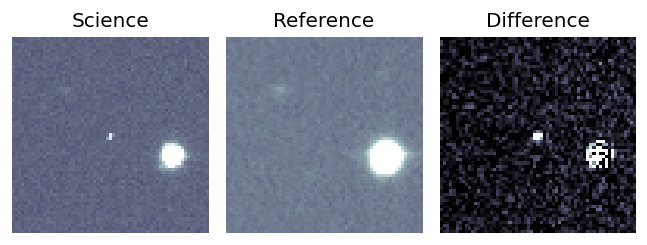
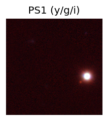
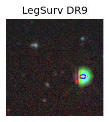
peak abs mag = -20.35 LegacySurvey: 1 sources in 3 arcsec Closest: d = 3.34 arcsec, 179.6 deg (east of north) photoz=0.71 (68% bounds 0.48, 1.25), type=PSF peak abs mag = -24.46 (68% bounds -23.42, -25.98) 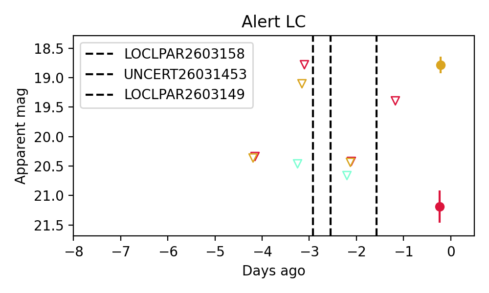
Consistent with synchrotron, g-r>0!
2. ZTF26aamhlib (Afterglow?) [Back to Top] [Share] [Trigger Swift] [Fritz ] [Lasair ]RA, Dec: 184.89575, -13.43697 12h19m34.98s, -13d-26m-13.11sGalactic (l, b): 291.1498, 48.70468 ext(g-r) = 0.056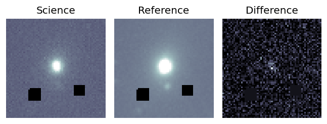
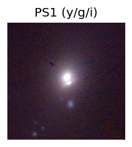
PS1: 1 source in 3 arcsec Closest: d = 1.55 arcsec photoz=0.03+/-0.00 peak abs mag = -16.92 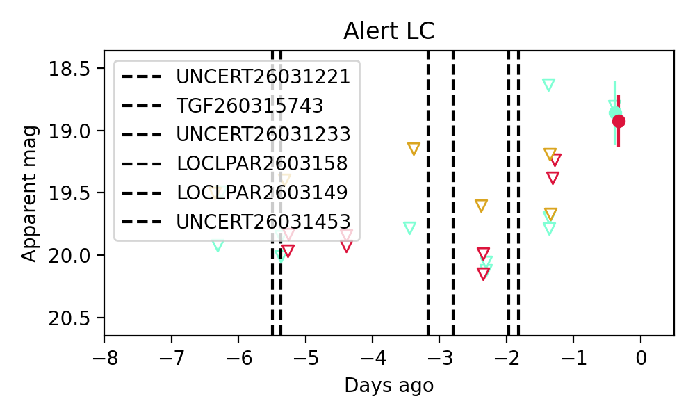
Consistent with synchrotron, g-r>0!
Section 2: Older Sources Observed Last Night (24)
0. ZTF26aakjzdt (Afterglow?) [Back to Top] [Share] [Trigger Swift] [Fritz ] [Lasair ]RA, Dec: 219.31727, 71.84175 14h37m16.14s, 71d50m30.31sGalactic (l, b): 111.99364, 42.96755 ext(g-r) = 0.028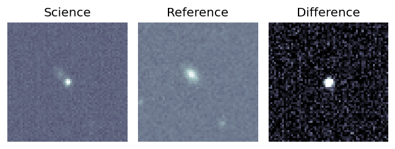
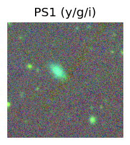
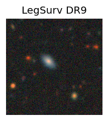
LegacySurvey: 1 sources in 3 arcsec Closest: d = 0.83 arcsec, 45.4 deg (east of north) photoz=0.03 (68% bounds 0.01, 0.14), type=REX peak abs mag = -17.72 (68% bounds -15.47, -21.45) 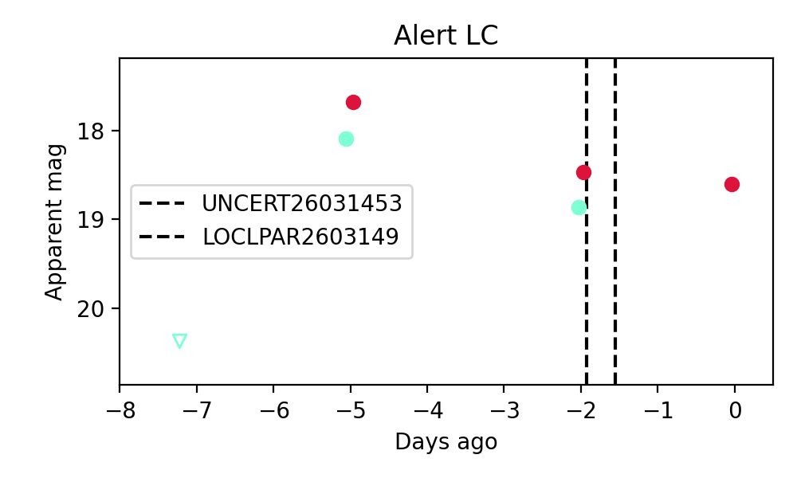
1. ZTF26aakkeyr (FBOT?) [Back to Top] [Share] [Trigger Swift] [Fritz ] [Lasair ]RA, Dec: 226.72916, 68.95419 15h 6m55.00s, 68d57m15.07sGalactic (l, b): 106.85979, 43.7045 ext(g-r) = 0.022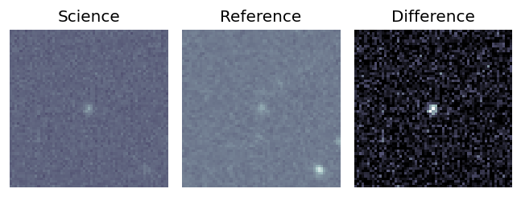
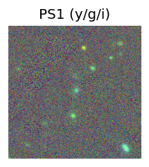
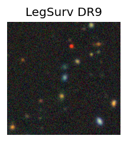
LegacySurvey: 1 sources in 3 arcsec Closest: d = 0.77 arcsec, 300.4 deg (east of north) photoz=0.11 (68% bounds 0.05, 0.18), type=REX peak abs mag = -20.04 (68% bounds -18.3, -21.2) 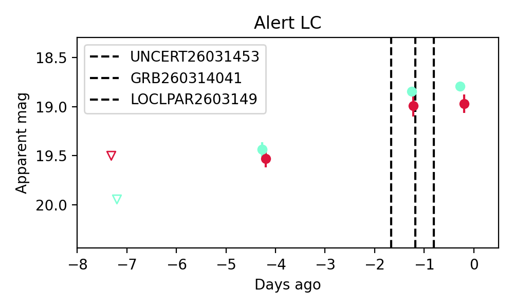
2. ZTF26aakmadn (FBOT?) [Back to Top] [Share] [Trigger Swift] [Fritz ] [Lasair ]RA, Dec: 105.75282, 39.24515 7h 3m0.68s, 39d14m42.53sGalactic (l, b): 177.75165, 18.86046 ext(g-r) = 0.094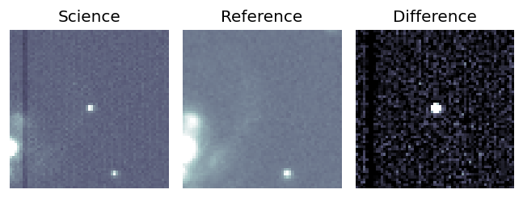
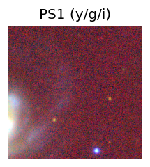
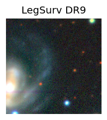
LegacySurvey: 1 sources in 3 arcsec Closest: d = 5.38 arcsec, 143.4 deg (east of north) photoz=0.04 (68% bounds 0.02, 0.14), type=REX peak abs mag = -19.64 (68% bounds -17.75, -22.64) 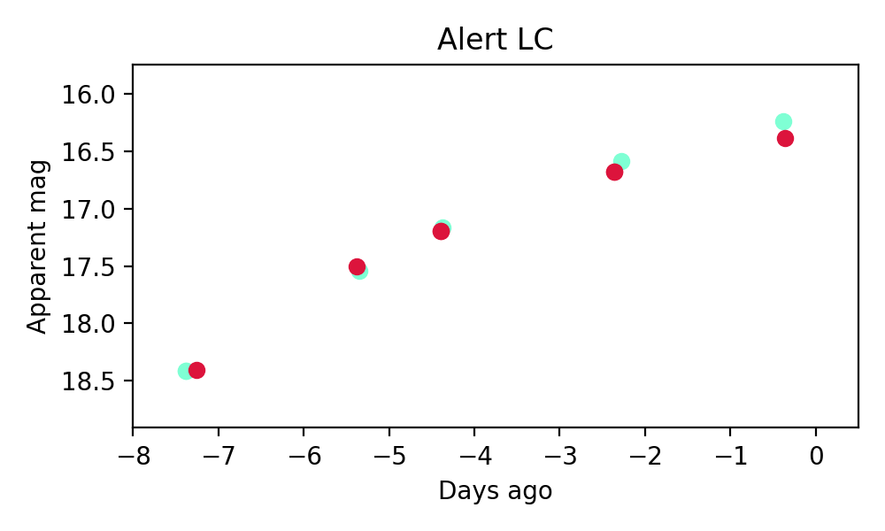
3. ZTF26aakqgyq (Afterglow?FBOT?) [Back to Top] [Share] [Trigger Swift] [Fritz ] [Lasair ]RA, Dec: 183.12595, 12.7528 12h12m30.23s, 12d45m10.07sGalactic (l, b): 268.64791, 72.97831 ext(g-r) = 0.03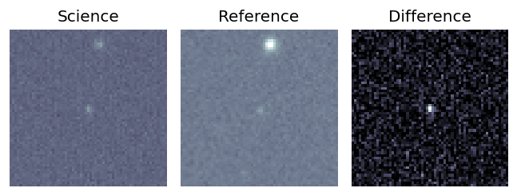
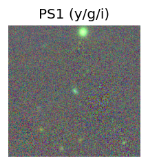
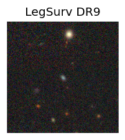
LegacySurvey: 1 sources in 3 arcsec Closest: d = 0.59 arcsec, 211.2 deg (east of north) photoz=0.19 (68% bounds 0.13, 0.25), type=EXP peak abs mag = -20.28 (68% bounds -19.44, -20.99) 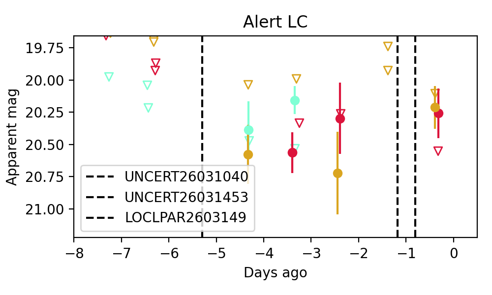
Consistent with synchrotron, g-r>0!
4. ZTF26aakqkpn (Afterglow?) [Back to Top] [Share] [Trigger Swift] [Fritz ] [Lasair ]RA, Dec: 195.17942, 37.31005 13h 0m43.06s, 37d18m36.19sGalactic (l, b): 112.62656, 79.63183 ext(g-r) = 0.015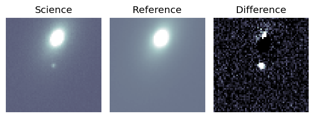
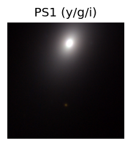
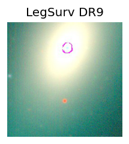
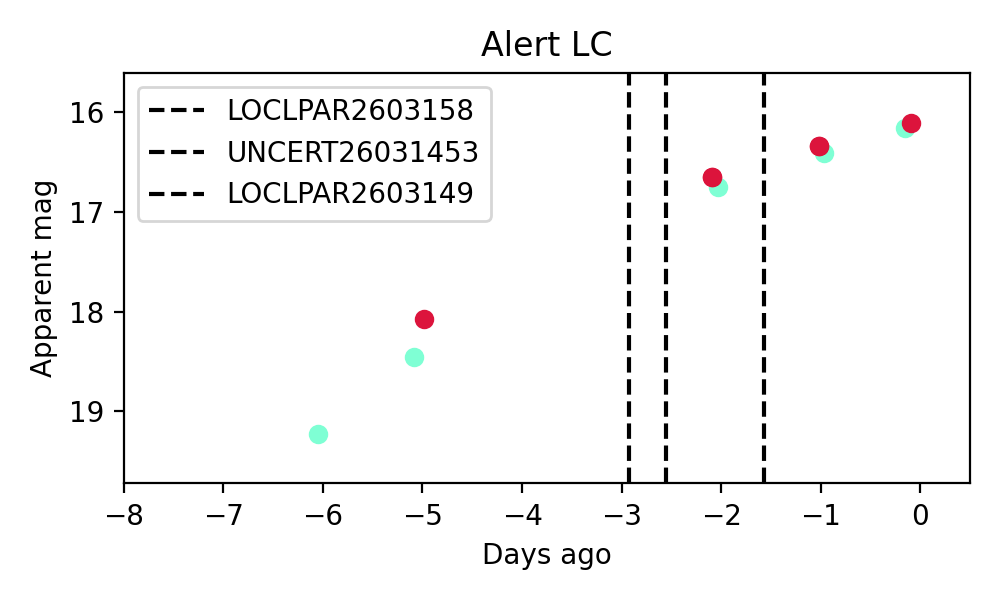
Consistent with synchrotron, g-r>0!
5. ZTF26aaktgrn (FBOT?) [Back to Top] [Share] [Trigger Swift] [Fritz ] [Lasair ]RA, Dec: 174.17228, 50.85912 11h36m41.35s, 50d51m32.82sGalactic (l, b): 148.77237, 62.35379 ext(g-r) = 0.018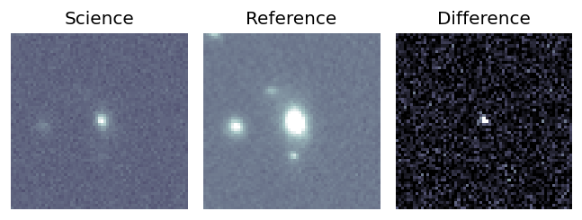
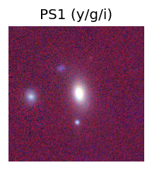
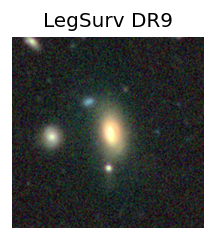
LegacySurvey: 1 sources in 3 arcsec Closest: d = 1.16 arcsec, 262.7 deg (east of north) photoz=0.11 (68% bounds 0.09, 0.12), type=SER peak abs mag = -19.48 (68% bounds -19.18, -19.72) 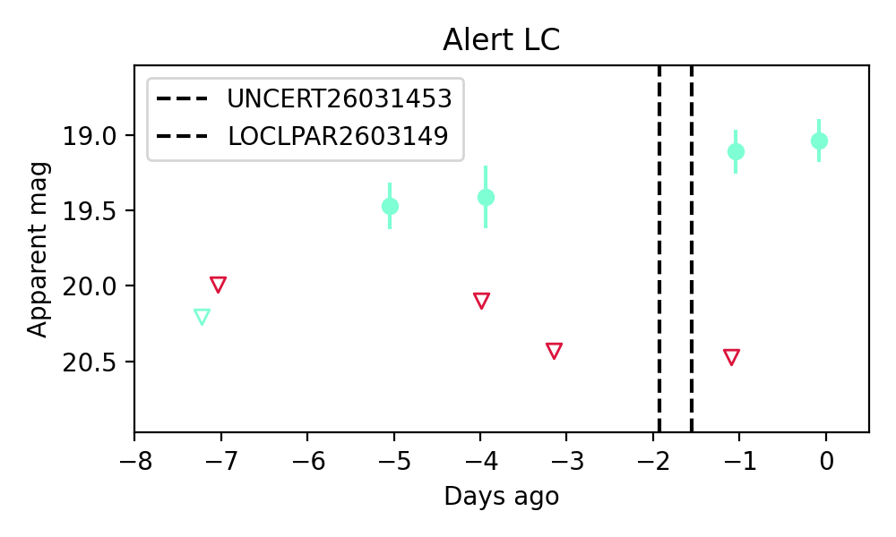
6. ZTF26aalbmvj (FBOT?) [Back to Top] [Share] [Trigger Swift] [Fritz ] [Lasair ]RA, Dec: 123.88679, 49.80497 8h15m32.83s, 49d48m17.88sGalactic (l, b): 169.30435, 33.6696 ext(g-r) = 0.053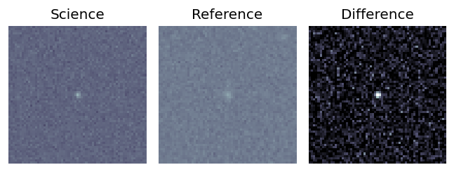
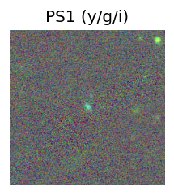
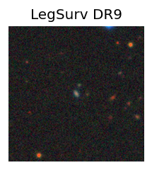
LegacySurvey: 1 sources in 3 arcsec Closest: d = 0.10 arcsec, 192.1 deg (east of north) photoz=0.19 (68% bounds 0.15, 0.26), type=EXP peak abs mag = -20.16 (68% bounds -19.55, -20.89) 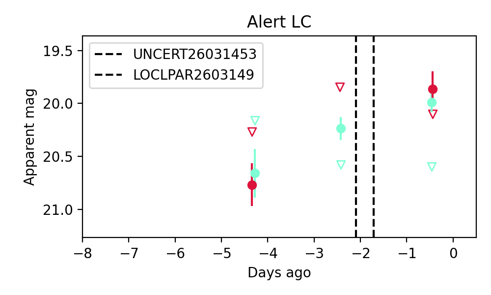
7. ZTF26aalbqhb (FBOT?) [Back to Top] [Share] [Trigger Swift] [Fritz ] [Lasair ]RA, Dec: 130.72249, 54.02817 8h42m53.40s, 54d 1m41.43sGalactic (l, b): 164.04041, 37.83218 ext(g-r) = 0.025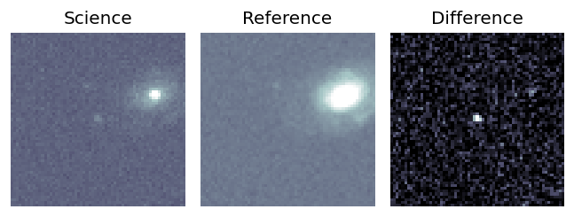
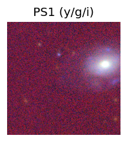
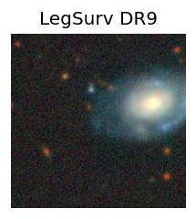
LegacySurvey: 1 sources in 3 arcsec Closest: d = 0.64 arcsec, 104.7 deg (east of north) photoz=0.47 (68% bounds 0.24, 0.93), type=PSF peak abs mag = -22.74 (68% bounds -21.07, -24.57) 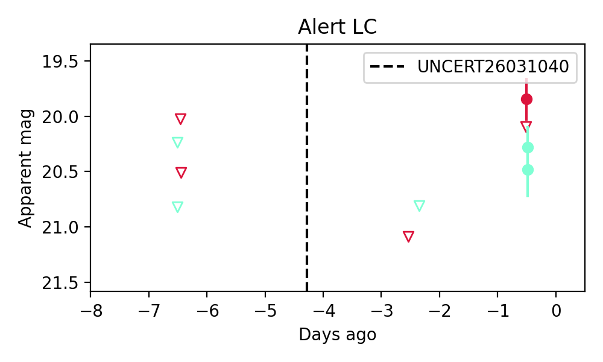
Consistent with synchrotron, g-r>0!
8. ZTF26aalcpif (Afterglow?) [Back to Top] [Share] [Trigger Swift] [Fritz ] [Lasair ]RA, Dec: 171.58099, 8.78076 11h26m19.44s, 8d46m50.73sGalactic (l, b): 251.31202, 62.77331 WARNING: 4.73 deg from ecliptic plane ext(g-r) = 0.063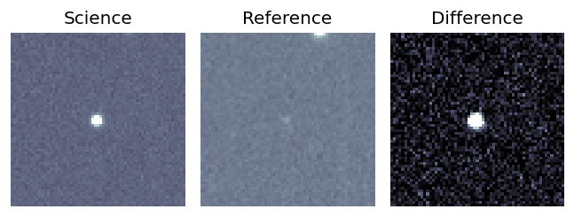
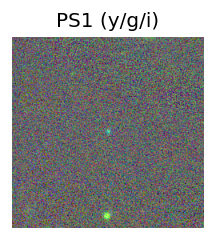
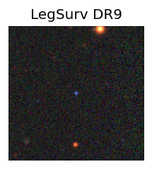
LegacySurvey: 1 sources in 3 arcsec Closest: d = 0.12 arcsec, 180.6 deg (east of north) photoz=0.81 (68% bounds 0.09, 1.11), type=PSF peak abs mag = -29.32 (68% bounds -23.94, -30.16) 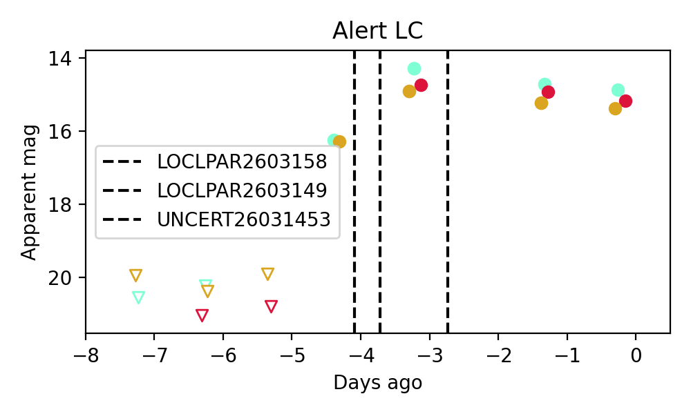
9. ZTF26aalcryr (Afterglow?) [Back to Top] [Share] [Trigger Swift] [Fritz ] [Lasair ]RA, Dec: 138.93992, 38.98624 9h15m45.58s, 38d59m10.47sGalactic (l, b): 183.72526, 43.96997 ext(g-r) = 0.017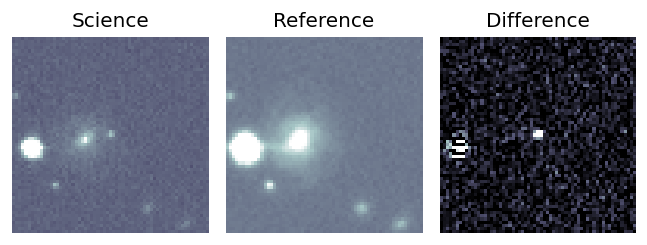
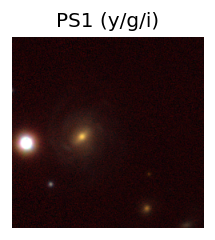
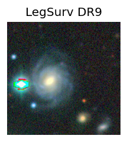
LegacySurvey: 1 sources in 3 arcsec Closest: d = 5.78 arcsec, 223.8 deg (east of north) photoz=0.01 (68% bounds 0.01, 0.03), type=PSF peak abs mag = -14.57 (68% bounds -13.4, -16.65) 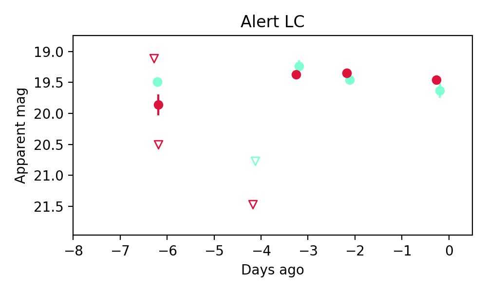
10. ZTF26aalgwun (FBOT?) [Back to Top] [Share] [Trigger Swift] [Fritz ] [Lasair ]RA, Dec: 209.32503, 28.9674 13h57m18.01s, 28d58m2.64sGalactic (l, b): 43.98795, 75.36451 ext(g-r) = 0.014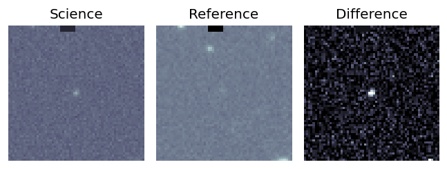
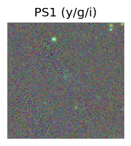
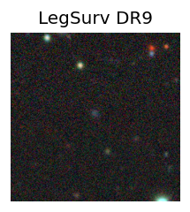
LegacySurvey: 1 sources in 3 arcsec Closest: d = 1.37 arcsec, 9.1 deg (east of north) photoz=0.19 (68% bounds 0.12, 0.63), type=EXP peak abs mag = -21.19 (68% bounds -20.06, -24.29)
11. ZTF26aalhcqv (Afterglow?) [Back to Top] [Share] [Trigger Swift] [Fritz ] [Lasair ]RA, Dec: 233.83065, 25.28621 15h35m19.35s, 25d17m10.35sGalactic (l, b): 39.55632, 53.35608 ext(g-r) = 0.057LegacySurvey: 1 sources in 3 arcsec Closest: d = 3.72 arcsec, 245.2 deg (east of north) photoz=0.54 (68% bounds 0.35, 0.91), type=REX peak abs mag = -23.76 (68% bounds -22.68, -25.14)
12. ZTF26aalhqcz (Afterglow?) [Back to Top] [Share] [Trigger Swift] [Fritz ] [Lasair ]RA, Dec: 237.09449, 69.38723 15h48m22.68s, 69d23m14.03sGalactic (l, b): 104.0486, 40.63829 ext(g-r) = 0.043LegacySurvey: 1 sources in 3 arcsec Closest: d = 6.69 arcsec, 207.0 deg (east of north) photoz=0.03 (68% bounds 0.02, 0.03), type=SER peak abs mag = -17.48 (68% bounds -17.2, -17.81) Consistent with synchrotron, g-r>0!
13. ZTF26aalnbhe (FBOT?) [Back to Top] [Share] [Trigger Swift] [Fritz ] [Lasair ]RA, Dec: 131.69038, 1.53858 8h46m45.69s, 1d32m18.90sGalactic (l, b): 225.54207, 26.18456 ext(g-r) = 0.042LegacySurvey: 1 sources in 3 arcsec Closest: d = 2.32 arcsec, 246.2 deg (east of north) photoz=0.14 (68% bounds 0.12, 0.17), type=SER peak abs mag = -19.69 (68% bounds -19.28, -20.1) Consistent with synchrotron, g-r>0!
14. ZTF26aalqabk (Afterglow?FBOT?) [Back to Top] [Share] [Trigger Swift] [Fritz ] [Lasair ]RA, Dec: 152.03154, 17.79744 10h 8m7.57s, 17d47m50.79sGalactic (l, b): 218.11738, 51.31346 ext(g-r) = 0.04LegacySurvey: 1 sources in 3 arcsec Closest: d = 0.33 arcsec, 208.2 deg (east of north) photoz=0.23 (68% bounds 0.11, 0.49), type=REX peak abs mag = -20.14 (68% bounds -18.41, -22.03) Consistent with synchrotron, g-r>0!
15. ZTF26aaltsvo (Afterglow?FBOT?) [Back to Top] [Share] [Trigger Swift] [Fritz ] [Lasair ]RA, Dec: 215.4933, 36.2721 14h21m58.39s, 36d16m19.55sGalactic (l, b): 64.04047, 68.75368 ext(g-r) = 0.01LegacySurvey: 1 sources in 3 arcsec Closest: d = 0.88 arcsec, 256.9 deg (east of north) photoz=0.09 (68% bounds 0.09, 0.1), type=SER peak abs mag = -19.91 (68% bounds -19.7, -20.06) Consistent with synchrotron, g-r>0!
16. ZTF26aamduvl (FBOT?) [Back to Top] [Share] [Trigger Swift] [Fritz ] [Lasair ]RA, Dec: 152.50944, 27.65217 10h10m2.27s, 27d39m7.83sGalactic (l, b): 202.5345, 54.33264 ext(g-r) = 0.034peak abs mag = -20.26 LegacySurvey: 1 sources in 3 arcsec Closest: d = 3.81 arcsec, 74.2 deg (east of north) photoz=0.14 (68% bounds 0.12, 0.15), type=SER peak abs mag = -19.78 (68% bounds -19.54, -19.97)
17. ZTF26aamfmus (Afterglow?FBOT?) [Back to Top] [Share] [Trigger Swift] [Fritz ] [Lasair ]RA, Dec: 134.24548, 1.62375 8h56m58.92s, 1d37m25.50sGalactic (l, b): 226.89415, 28.44021 ext(g-r) = 0.041peak abs mag = -20.27 LegacySurvey: 1 sources in 3 arcsec Closest: d = 0.26 arcsec, 227.1 deg (east of north) photoz=0.17 (68% bounds 0.16, 0.17), type=SER peak abs mag = -20.33 (68% bounds -20.22, -20.44) Consistent with synchrotron, g-r>0!
18. ZTF26aamfpht (Afterglow?) [Back to Top] [Share] [Trigger Swift] [Fritz ] [Lasair ]RA, Dec: 151.59935, 73.41149 10h 6m23.84s, 73d24m41.38sGalactic (l, b): 136.93296, 38.90343 ext(g-r) = 0.02LegacySurvey: 1 sources in 3 arcsec Closest: d = 3.24 arcsec, 11.7 deg (east of north) photoz=0.08 (68% bounds 0.07, 0.11), type=EXP peak abs mag = -17.98 (68% bounds -17.65, -18.5) Consistent with synchrotron, g-r>0!
19. ZTF26aamfpth (Afterglow?) [Back to Top] [Share] [Trigger Swift] [Fritz ] [Lasair ]RA, Dec: 148.97113, 44.01399 9h55m53.07s, 44d 0m50.36sGalactic (l, b): 175.46866, 51.08823 ext(g-r) = 0.015peak abs mag = -17.69 LegacySurvey: 1 sources in 3 arcsec Closest: d = 3.50 arcsec, 106.4 deg (east of north) photoz=0.07 (68% bounds 0.07, 0.08), type=SER peak abs mag = -17.65 (68% bounds -17.46, -17.83) Consistent with synchrotron, g-r>0!
20. ZTF26aamhblx (Afterglow?FBOT?) [Back to Top] [Share] [Trigger Swift] [Fritz ] [Lasair ]RA, Dec: 178.06333, -11.44895 11h52m15.20s, -11d-26m-56.22sGalactic (l, b): 280.58095, 48.83737 ext(g-r) = 0.045PS1: 1 source in 3 arcsec Closest: d = 1.16 arcsec photoz=0.05+/-0.00 peak abs mag = -19.76
21. ZTF26aamhkde (Afterglow?FBOT?) [Back to Top] [Share] [Trigger Swift] [Fritz ] [Lasair ]RA, Dec: 189.02287, 12.7636 12h36m5.49s, 12d45m48.96sGalactic (l, b): 288.13789, 75.19277 ext(g-r) = 0.044peak abs mag = -21.02 LegacySurvey: 1 sources in 3 arcsec Closest: d = 1.34 arcsec, 264.6 deg (east of north) photoz=0.51 (68% bounds 0.41, 0.65), type=REX peak abs mag = -22.01 (68% bounds -21.42, -22.63)
22. ZTF26aamigtr (FBOT?) [Back to Top] [Share] [Trigger Swift] [Fritz ] [Lasair ]RA, Dec: 207.21079, -15.33617 13h48m50.59s, -15d-20m-10.21sGalactic (l, b): 322.80231, 45.30924 WARNING: -3.86 deg from ecliptic plane ext(g-r) = 0.086PS1: 1 source in 3 arcsec Closest: d = 0.18 arcsec photoz=0.08+/-0.01 peak abs mag = -19.65
23. ZTF26aaminhk (FBOT?) [Back to Top] [Share] [Trigger Swift] [Fritz ] [Lasair ]RA, Dec: 204.11812, -13.40408 13h36m28.35s, -13d-24m-14.70sGalactic (l, b): 319.42749, 48.02004 WARNING: -3.13 deg from ecliptic plane ext(g-r) = 0.09PS1: 1 source in 3 arcsec Closest: d = 0.36 arcsec photoz=0.09+/-0.01 peak abs mag = -20.44